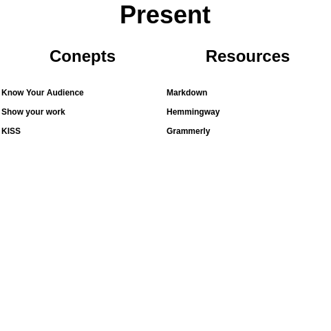

Present

Picture of the Present section (with pictures and colors) goes here. This can prime the reader for the next section and might also help to break up an otherwise monotonous wall of text.
Notes
MOTIVATION
- if a tree falls in a forest
- clear communication
CONCEPTS
- know your audience
- show your work
- keep it simple
- keep it structured
TOOLS
- check spelling
- check grammar
- keep it simple
- read good writing
Overview
Both political feasibility and incentive compatibility matter in socio-economic systems. Data is only half the battle. What takes priority will not just depend on who can best define the goal (strategy) and the steps to get there (tactics), but also who can best communicate it and align the relevant powers around it. In the context of computer aided governance this is essential. If people don't understand what you're talking about they won't be able to productively or intelligently engage with your work. Less engagement leads to lower chances of your proposal passing. Making your purpose, process, and hypothesis clear is the first step towards success.
Then you need to share your work. This implies that there is an audience. Knowing your audience can help you craft your message in a way that's accessible. The key is to make content that is both interesting and informational. People need to care. Keeping things simple, structuring your content, and showing your work is a good first step.
There's many tools that can help you improve your writing. Some are focused on mechanics and some are more for overall structure. Both are good. Start with checking your spelling, grammar, and run-on sentences. From there it helps a lot to read good writing. Good writing is subjective so this is going to be dependent on your personal preferences, and more importantly, your audience.
Concepts
Know Your Audience
- Who is the intended audience?
- What are their incentives and why should they care about your proposal?
- What is there level of technical sophistication? Are there any concepts or prerequisites you need to explain?
- Are you passively posting your proposal and hoping your audience will come to you, or are you actively reaching out to your audience to get them engaged with your ideas?
Show Your Work
- Is prior knowledge required to understand the content? If so, where can people find this knowledge to better understand your content?
- How did you arrive at your current form of thinking. Sharing the options considered in the Ask phase can help people better understand your perspective.
Keep It Simple
Structure
- Keep your proposal as short as possible, but no simpler.
- Explain things as simply as possible, but no simpler.
- Pick a good title. It should be the simplest possible explanation of the purpose of your writing. It should also grab the reader and make them curious so that they read more.
- Start with why. Explain your motivation and the direction of your thinking.
- Include pictures and lists. It's likely that people will read the title, then skim the piece to see if it's worth reading. Pictures and lists stand out.
- Share diagrams and models for people to fork and explore.
- Conclude by restating your purpose, summarizing your proposal, and asking the reader to take action (even if that's just asking people to provide feedback).
- Make it easy for people to share, comment on, and engage with your proposal. Welcome and encourage feedback, and then engage with that feedback to answer questions and explore ideas.
Any proposal should at least cover: - a description of a problem - a rationale for why a solution is needed - a way to verify the problem and rationale behind the solution
Tools
Markdown Guide
Getting good at Markdown can help if you're communicating on forums that are Markdown based like Discourse.
Hemmingway
The Hemingway app can help you check for long run on sentences that go on and on, esp those that could be split into multiple sentences, which is very useful in making your ideas easier for other to understand.
Grammerly
Grammerly can help you improve your grammar, but beware of installing it on a computer or browser that you use to handle sensitive information as it's probably logging everything you type and sending it to a server.
Better Writing Guides
- The day you became a better writer - Scott Adams shares some clear and concise tips on writing better. Takes 2min to read.
- Get your memo read - Another short and practical guide on writing by Seth Godin.
- Writing for people who don't read - Know your audience. Half the battle is finding people who want to hear what you have to say.
- Notes on writing - YC researcher Michael Nielsen shares his perspective on what makes writing good.
- Save time by writing better - No one wants to read your disorganized writing. Good writing shows that you care. It's a sign of respect to the reader.
- The work required to have an opinion - If you understand multiple perspectives on a subject you can anticipate and address likely questions and critiques.